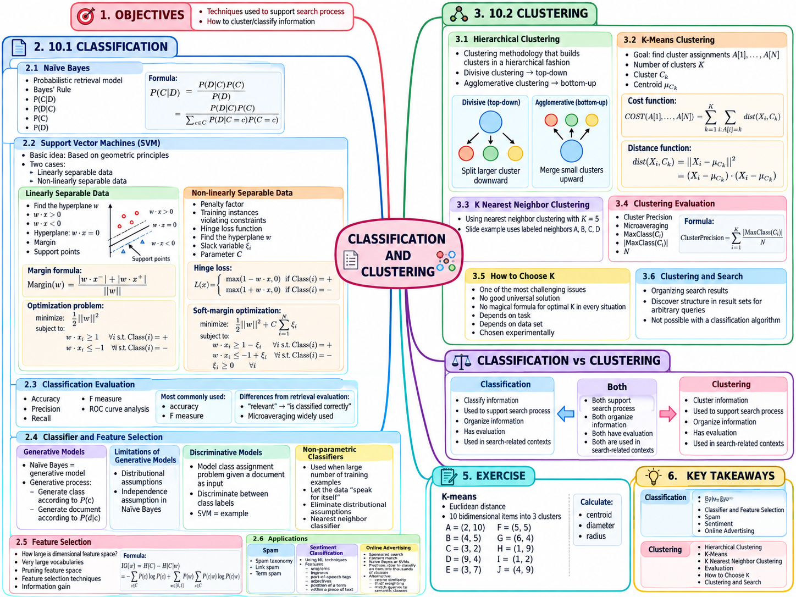

Tài liệu gốc: Slide bài giảng SEG301m Chương 10, "Classification and Clustering" (23 slide)
Cách đọc: Phân loại dự đoán các nhãn đã biết trước, còn phân cụm tìm kiếm các cấu trúc nhóm tự nhiên trong dữ liệu mà không dùng nhãn mục tiêu. Nửa đầu chương trình bày các phương pháp phân loại văn bản, nửa sau tìm hiểu việc gom nhóm kết quả tìm kiếm, và phần cuối giải trọn vẹn bài tập K-means trong slide gốc cho đến khi hội tụ.
Mục tiêu của chương
Sau khi học xong chương này, bạn có thể:
- Huấn luyện mô hình Multinomial Naive Bayes và phân loại câu văn mới bằng kỹ thuật smoothinglàm mịn kết hợp thang điểm logarit.
- SmoothingLàm mịn kết hợp thang điểm logarit.
- Giải thích siêu phẳng (hyperplane), lề (margin), vector hỗ trợ (support vector), lề cứng (hard margin), lề mềm (soft margin), hàm mất mát hinge (hinge loss) và siêu tham số
Ctrong SVM. - Phân biệt hierarchical clusteringphân cụm phân cấp, K-means và các kỹ thuật gom nhóm dựa trên láng giềng gần nhất.
- Information gainĐộ tăng thông tin khi một từ xuất hiện hoặc vắng mặt.
- Hierarchical clusteringPhân cụm phân cấp, K-means và các kỹ thuật gom nhóm dựa trên láng giềng gần nhất.
- Tính độ tinh khiết (purity), giải thích cách chọn số cụm
Kcùng những giới hạn khi đánh giá phân cụm. - Phân chia 10 điểm trong bài tập gốc thành 3 cụm, tính toán tọa độ centroidtrọng tâm, diameterđường kính cụm và radiusbán kính cụm của từng cụm.
SLIDE NGUỒN 1–3

Kiến thức cần chuẩn bị
- Tách từ (tokenization) và xây dựng đặc trưng trong Chương 4 là bước khởi đầu để biểu diễn tài liệu văn bản thành vector số.
- Các mô hình xác suất, vector không gian và tổng quan về SVM trong Chương 7 là nền tảng trực tiếp cho các bộ phân loại trong chương này.
- Các chỉ số precision, recall và F1 trong Chương 9 tiếp tục được tái sử dụng để đánh giá hiệu năng phân loại văn bản.
- Đối với các thuật toán dựa trên khoảng cách hình học, thang đo của từng đặc trưng và định nghĩa hàm khoảng cách sẽ quyết định trực tiếp cấu trúc phân nhóm cuối cùng.
Chương này sử dụng ví dụ xuyên suốt: phân loại các bản tin ngắn hoặc công thức nấu ăn vào các danh mục chủ đề, đồng thời gom cụm danh sách kết quả tìm kiếm theo từng nhóm chủ đề tương đồng.
Sự khác biệt giữa phân loại và phân cụm
Hãy xem xét bài toán tổ chức kết quả tìm kiếm tin tức:
| Phương pháp | Dữ liệu đầu vào | Quá trình học / xử lý | Dữ liệu đầu ra |
|---|---|---|---|
| ClusteringPhân cụm | Tài liệu và các vector đặc trưng; không sử dụng nhãn mục tiêu (học không giám sát) | Khám phá cấu trúc tự nhiên dựa trên độ tương đồng hoặc khoảng cách | Tạo ra các nhóm (cụm) chứa các tài liệu có nội dung gần gũi |
| ClusteringPhân cụm | Tài liệu và các vector đặc trưng; không sử dụng nhãn mục tiêu (học không giám sát) | Khám phá cấu trúc tự nhiên dựa trên độ tương đồng hoặc khoảng cách | Tạo ra các nhóm (cụm) chứa các tài liệu có nội dung gần gũi |
Bộ lọc thư rác (spam filter), phân tích cảm xúc (sentiment analysis) hay gắn danh mục quảng cáo là các ví dụ điển hình của bài toán phân loại. Ngược lại, việc tự động gom nhóm danh sách kết quả tìm kiếm theo các chủ đề liên quan là ví dụ của bài toán phân cụm. Dù sau khi phân cụm con người có thể đặt tên cho từng nhóm, nhưng trong suốt quá trình hình thành cụm, thuật toán hoàn toàn không sử dụng bất kỳ nhãn mục tiêu có sẵn nào.
10.1 Naive Bayes
SLIDE NGUỒN 4
Định lý Bayes biểu diễn xác suất của lớp C sau khi đã quan sát tài liệu D:
P(C|D): PosteriorXác suất hậu nghiệm, xác suất tài liệu thuộc về lớpCsau khi đã quan sát toàn bộ nội dung củaD.P(D|C): LikelihoodHàm hợp lý, đo lường khả năng tài liệuDđược sinh ra nếu biết trước nó thuộc về lớpC.P(C|D): PosteriorXác suất hậu nghiệm, xác suất tài liệu thuộc về lớpCsau khi đã quan sát toàn bộ nội dung củaD.P(D): Hệ số chuẩn hóa chung cho tất cả các lớp.
Thuật toán Naive Bayes đưa ra giả định ngây thơ (naive) rằng: khi đã biết lớp của tài liệu, sự xuất hiện của các từ (đặc trưng) là hoàn toàn độc lập có điều kiện với nhau. Dù trong thực tế hai từ quick và breakfast thường đi liền với nhau, giả định này cho phép phân rã xác suất đồng thời thành tích các xác suất thành phần riêng rẽ. Nhờ sự đơn giản hóa này, mô hình có thể huấn luyện cực nhanh và hoạt động ổn định ngay cả trên những tập dữ liệu nhỏ.
Phân tách giai đoạn huấn luyện và dự đoán
- Huấn luyện (training): Đếm tần số xuất hiện của các từ trong tập tài liệu huấn luyện để ước lượng xác suất tiên nghiệm và xác suất có điều kiện của từng từ.
- Dự đoán (prediction): Thay các giá trị xác suất đã học vào tài liệu mới để tính toán và so sánh điểm số giữa các lớp.
Tuyệt đối không đếm tần số từ vựng trong tập kiểm thử (test data) gộp vào tập huấn luyện, vì điều đó sẽ gây ra hiện tượng rò rỉ thông tin và làm sai lệch kết quả đánh giá.
Ví dụ minh họa Multinomial Naive Bayes
Dưới đây là ví dụ bổ sung sử dụng mô hình Multinomial Naive Bayes dựa trên số lần xuất hiện của từ. Cần phân biệt rõ với biến thể Bernoulli Naive Bayes (chỉ xét sự hiện diện nhị phân 0 hoặc 1 của từ):
| Lớp | Tài liệu huấn luyện |
|---|---|
| Recipe | healthy breakfast recipe |
| Recipe | quick breakfast smoothie |
| Sports | football match score |
| Sports | team football match |
Từ vựng chung gồm 9 từ duy nhất:
V = {healthy, breakfast, recipe, quick, smoothie,
football, match, score, team}
Mỗi lớp có tổng cộng 6 từ (tokens) và 2 tài liệu, do đó xác suất tiên nghiệm của cả hai lớp là 2 / 4 = 0.5.
| Từ | Số lần trong Recipe | Số lần trong Sports |
|---|---|---|
| breakfast | 2 | 0 |
| quick | 1 | 0 |
| recipe | 1 | 0 |
| football | 0 | 2 |
| match | 0 | 2 |
| Các từ còn lại | Theo bảng tài liệu huấn luyện trên | Theo bảng tài liệu huấn luyện trên |
Sử dụng kỹ thuật làm mịn cộng (additive / Laplace smoothing) với α = 1:
N_c = 6: Tổng số token trong lớpc.|V| = 9: Kích thước từ vựng của tập huấn luyện.- Mẫu số chung là
6 + 1 × 9 = 15. - Nhờ
α = 1, các từ chưa từng xuất hiện trong lớp cũng nhận được xác suất tối thiểu là1 / 15.
Xét tài liệu mới cần phân loại là quick breakfast recipe:
score(Recipe)
= P(Recipe) P(quick|Recipe) P(breakfast|Recipe) P(recipe|Recipe)
= 0.5 × 2/15 × 3/15 × 2/15
= 0.0017778
score(Sports)
= 0.5 × 1/15 × 1/15 × 1/15
= 0.0001481
Các điểm số trên là giá trị trước khi chuẩn hóa. Vì điểm của lớp Recipe cao gấp 12 lần lớp Sports, tài liệu mới được phân loại vào Recipe. Nếu chuẩn hóa trên không gian 2 lớp, xác suất hậu nghiệm là:
P(Recipe|D) = 0.0017778 / (0.0017778 + 0.0001481)
≈ 0.9231
Nếu không có kỹ thuật làm mịn, phía lớp Sports sẽ chứa xác suất 0 khiến toàn bộ tích điểm số bị triệt tiêu về 0. Đối với các tài liệu dài, tích của nhiều xác suất nhỏ có thể gây ra hiện tượng tràn số dưới (underflow), vì vậy trong thực tế người ta cộng các điểm số logarit:
log score(Recipe) ≈ -6.3324
log score(Sports) ≈ -8.8173
Hàm logarit đồng biến nên giá trị lớn hơn -6.3324 vẫn chỉ ra đúng lớp chiến thắng tương đương như phép nhân xác suất gốc.
10.2 Support Vector Machine
SLIDE NGUỒN 5–7
Mỗi tài liệu được biểu diễn bằng một vector đặc trưng x, và bài toán phân loại nhị phân gán nhãn y ∈ {−1, +1}. Thuật toán Support Vector Machine (SVM) tìm kiếm một siêu phẳng (hyperplane) phân tách không gian:
Phương trình f(x) = 0 định nghĩa ranh giới quyết định (decision boundary). Nếu f(x) > 0, mô hình dự đoán nhãn +1; nếu f(x) < 0, dự đoán nhãn −1. Vector pháp tuyến w quyết định hướng xoay của siêu phẳng, còn hệ số chặn b quyết định vị trí tịnh tiến. Hai đường biên lề (margin boundaries) được chuẩn hóa tại f(x) = +1 và f(x) = −1.
Ký hiệu ||w|| biểu thị độ dài hình học của vector w. Khoảng cách vuông góc từ ranh giới quyết định tới mỗi đường biên lề là 1 / ||w||, do đó tổng độ rộng của lề giữa hai lớp là 2 / ||w||. Vì vậy, bài toán tối đa hóa độ rộng lề tương đương với việc tối thiểu hóa độ dài ||w||.
Lề cứng (Hard Margin)
Khi dữ liệu hoàn toàn phân tách tuyến tính, SVM tìm kiếm siêu phẳng có lề rộng nhất sao cho mọi điểm dữ liệu huấn luyện đều nằm đúng phía bên ngoài đường biên lề:
Khi đó, những điểm dữ liệu huấn luyện thỏa mãn đẳng thức y_i f(x_i) = 1 (nằm chính xác trên hai đường biên lề f(x) = +1 hoặc f(x) = −1) được gọi là các support vectorvector hỗ trợ. Các điểm này đóng vai trò then chốt quyết định vị trí của ranh giới tối ưu; nếu loại bỏ hoặc dịch chuyển các điểm khác nằm xa ngoài lề (y_i f(x_i) > 1), vị trí của siêu phẳng tối ưu hoàn toàn không thay đổi.
Lề mềm, hàm mất mát hinge và siêu tham số C
Trong thực tế, dữ liệu văn bản thường bị nhiễu và không thể phân tách tuyến tính hoàn hảo. Do đó, SVM sử dụng cơ chế soft marginlề mềm, cho phép một số điểm dữ liệu vi phạm điều kiện lề thông qua hàm mất mát hinge:
Mất mát hinge bằng 0 khi y f(x) ≥ 1 (điểm nằm đúng phía và ở ngoài lề). Khi 0 < y f(x) < 1, điểm nằm đúng phía nhưng rơi vào bên trong vùng lề nên vẫn bị phạt; khi y f(x) < 0, điểm bị phân loại sai hoàn toàn.
Siêu tham số C điều tiết sự đánh đổi: C càng lớn thì hình phạt cho các điểm vi phạm lề càng nặng, ép mô hình tạo lề hẹp hơn để giảm lỗi huấn luyện; ngược lại, C nhỏ ưu tiên độ rộng lề lớn hơn, chấp nhận nhiều vi phạm hơn để tránh quá khớp (overfitting). Cần chọn C tối ưu dựa trên tập kiểm thực (validation set).
Trong mô hình lề mềm, không được hiểu một cách máy móc rằng support vector chỉ là "những điểm gần ranh giới quyết định nhất". Bên cạnh các điểm nằm trên đường biên lề, các điểm nằm trong margin hoặc bị phân loại sai cũng có thể là những điểm tác động trực tiếp lên nghiệm tối ưu và trở thành support vector.
Tính toán giá trị dự đoán và hàm mất mát
Giả định một siêu phẳng minh họa với w = (1, 1) và b = -1 (đây là ranh giới giả định phục vụ tính toán, chưa phải nghiệm tối ưu sau huấn luyện):
| Trường hợp | y |
x |
f(x) |
y f(x) |
Mất mát Hinge |
|---|---|---|---|---|---|
| Phân loại đúng, ngoài lề | +1 | (2, 1) |
2 + 1 − 1 = 2.0 |
2.0 | max(0, 1 − 2) = 0 |
| Phân loại đúng, nằm trong lề | +1 | (0.8, 0.6) |
0.4 | 0.4 | max(0, 1 − 0.4) = 0.6 |
| Phân loại sai | −1 | (1.2, 0.5) |
0.7 | -0.7 | max(0, 1 − (-0.7)) = 1.7 |
Trong giai đoạn dự đoán, ta dùng w, b đã biết để tính f(x). Trong giai đoạn huấn luyện, ta tìm w, b tối thiểu hóa hàm mục tiêu. Cần phân biệt rõ hai giai đoạn này.
10.3 Đánh giá bộ phân loại
SLIDE NGUỒN 8
Confusion matrixMa trận nhầm lẫn cho bài toán phân loại nhị phân quy ước hàng là nhãn thực tế (actual) và cột là nhãn dự đoán (predicted):
| Thực tế \ Dự đoán | Positive | Negative |
|---|---|---|
| Positive | TP | FN |
| Negative | FP | TN |
Giả sử trong tập 100 email có 12 email rác (spam) và 88 email thông thường. Nếu mô hình đạt TP = 8, FN = 4, FP = 2, TN = 86, độ chính xác tổng thể (accuracy) đạt tới 94%, nhưng độ bao phủ (recall) của lớp spam chỉ đạt 8 / 12 = 66.7%. Khi dữ liệu bị mất cân bằng lớp nghiêm trọng, chỉ số accuracy sẽ che giấu việc mô hình bỏ sót nhiều mẫu thuộc lớp thiểu số.
Trung bình Micro và trung bình Macro
Xét bảng ma trận nhầm lẫn cho bài toán phân loại 3 lớp (A, B, C):
| Thực tế \ Dự đoán | A | B | C |
|---|---|---|---|
| A | 45 | 3 | 2 |
| B | 4 | 4 | 2 |
| C | 3 | 2 | 5 |
| Lớp | PrecisionĐộ chính xác | RecallĐộ thu hồi | Điểm F1 |
|---|---|---|---|
| A | 45 / (45 + 7) = 0.865 |
45 / 50 = 0.900 |
0.882 |
| B | 4 / (4 + 5) = 0.444 |
4 / 10 = 0.400 |
0.421 |
| C | 5 / (5 + 4) = 0.556 |
5 / 10 = 0.500 |
0.526 |
Chỉ số Macro-F1 tính trung bình cộng số học của các điểm F1 theo từng lớp với trọng số ngang nhau. Mỗi lớp có tiếng nói tương đương nên chỉ số này phản ánh rất nhạy các sai sót trên các lớp nhỏ:
macro-F1 = (0.882 + 0.421 + 0.526) / 3 ≈ 0.610
Ngược lại, trung bình Micro cộng dồn toàn bộ TP, FP, FN trên tất cả các lớp trước khi tính toán. Đối với bài toán phân loại đơn nhãn, micro precision, micro recall và micro-F1 đều bằng độ chính xác tổng thể accuracy: 54 / 70 ≈ 0.771. Điểm số micro chịu sự chi phối mạnh của lớp A (chiếm số lượng lớn nhất). Việc macro-F1 thấp hơn nhiều so với micro-F1 cảnh báo rằng hệ thống đang hoạt động kém trên hai lớp thiểu số B và C.
10.4 Bộ phân loại và lựa chọn đặc trưng
SLIDE NGUỒN 9–12
Mô hình sinh và mô hình phân biệt
- Generative modelMô hình sinh: Mô hình hóa quá trình dữ liệu được sinh ra từ các lớp thông qua phân phối xác suất
P(c)vàP(d|c). Ví dụ tiêu biểu là Naive Bayes. - Discriminative modelMô hình phân biệt: Học trực tiếp ranh giới phân tách hoặc hàm điều kiện
P(c|d). Ví dụ tiêu biểu là SVM.
Mô hình sinh hữu hiệu khi tập dữ liệu nhỏ nhờ việc đặt ra các giả định về phân phối. Mô hình phân biệt tập trung trực tiếp vào việc tối ưu ranh giới phân lớp nên thường cho độ chính xác cao hơn khi có đủ dữ liệu huấn luyện.
Bộ phân loại láng giềng gần nhất và phương pháp phi tham số
Bộ phân loại k láng giềng gần nhất (k-NN classifier) gán nhãn cho điểm dữ liệu mới dựa trên đa số phiếu bầu từ k điểm huấn luyện nằm gần nó nhất trong không gian đặc trưng. Thuật ngữ phi tham số (non-parametric) không có nghĩa là mô hình không cần giả định nào, mà có nghĩa là cấu trúc mô hình không bị đóng khung trong một số lượng tham số phân phối cố định trước; nó vẫn phụ thuộc chặt chẽ vào hàm khoảng cách hình học, cách chuẩn hóa đặc trưng và số lượng láng giềng k.
Độ tăng thông tin (Information Gain)
Trong xử lý văn bản, không gian từ vựng có thể lên tới hàng trăm nghìn từ. Kỹ thuật feature selectionlựa chọn đặc trưng giúp loại bỏ các từ nhiễu để giảm độ phức tạp tính toán và chống quá khớp. Bắt buộc phải chọn đặc trưng trên tập dữ liệu huấn luyện, không được dùng tập kiểm thử.
Gọi biến ngẫu nhiên nhị phân W ∈ {0, 1} biểu thị việc từ w xuất hiện (W = 1) hay vắng mặt (W = 0) trong tài liệu. Độ hỗn loạn (entropy) đo lường mức độ bất định của phân phối lớp C, tính bằng bit (sử dụng logarit cơ số 2). Độ tăng thông tin (Information Gain, IG) đo lượng bất định giảm đi sau khi biết trạng thái của từ w:
Xét tập 8 tài liệu gồm 4 email spam và 4 email bình thường (ham). Từ free xuất hiện trong cả 4 email spam và 1 email ham:
Từ free |
Spam | Ham | Tổng cộng |
|---|---|---|---|
Xuất hiện (W = 1) |
4 | 1 | 5 |
Vắng mặt (W = 0) |
0 | 3 | 3 |
Ban đầu số lượng hai lớp bằng nhau nên entropy ban đầu là H(C) = 1 bit.
H(C|W=1) = -(4/5)log2(4/5) - (1/5)log2(1/5)
≈ 0.7219
H(C|W=0) = 0
H(C|W) = (5/8)×0.7219 + (3/8)×0
≈ 0.4512
IG(free) = 1 - 0.4512 = 0.5488 bit
Giá trị IG càng lớn chứng tỏ đặc trưng đó càng mang nhiều thông tin giúp phân biệt các lớp. Trong ví dụ này, việc biết từ free có mặt hay không giúp giảm độ bất định của bài toán đi khoảng 0,5488 bit.
10.5 Ứng dụng: Spam, phân tích cảm xúc và quảng cáo trực tuyến
SLIDE NGUỒN 13–15
Lọc thư rác (Spam Detection)
Slide 13 phân biệt giữa term spam (thao túng tần số từ khóa gượng ép trong văn bản) và link spam (tạo dựng mạng lưới liên kết nhân tạo để thao túng thứ hạng). Bộ phân loại kết hợp các đặc trưng tần số từ vựng, cấu trúc siêu liên kết và thẻ định dạng HTML. Do kẻ spam liên tục thay đổi chiến thuật, các mô hình phân loại cần được liên tục học lại với dữ liệu mới.
Phân tích cảm xúc (Sentiment Analysis)
Nếu chỉ sử dụng các từ đơn lẻ (unigram), mô hình rất dễ hiểu sai ngữ cảnh phủ định:
good → Tín hiệu cảm xúc tích cực
not good → Unigram vẫn nhận diện từ good và có thể phân loại nhầm thành tích cực
Việc bổ sung đặc trưng 2-gram (như not_good), xác định phạm vi phủ định, phân tích từ loại (POS tag) và vị trí từ trong câu sẽ giúp cải thiện rõ rệt độ chính xác. Ngôn ngữ châm biếm và các từ ngữ phụ thuộc ngữ cảnh chuyên ngành vẫn là thách thức lớn đối với bài toán này.
Quảng cáo tìm kiếm và so khớp ngữ cảnh
- Quảng cáo tìm kiếm có tài trợ (sponsored search): So khớp quảng cáo với câu truy vấn ngắn gọn của người dùng tại thời điểm tìm kiếm.
- Quảng cáo theo ngữ cảnh (content match): So khớp quảng cáo với toàn bộ nội dung của trang web mà người dùng đang đọc.
Tùy vào đầu vào là truy vấn ngắn hay bài viết dài mà yêu cầu về tốc độ xử lý và bộ đặc trưng sử dụng sẽ khác nhau. Khi không gian phân loại lên tới hàng nghìn danh mục quảng cáo, người ta thường dùng biểu diễn tf-idf kết hợp độ tương đồng cosine để lọc nhanh các danh mục ứng viên trước khi chạy mô hình phân loại chi tiết.
10.6 Phân cụm phân cấp (Hierarchical Clustering)
SLIDE NGUỒN 16
Hierarchical clusteringPhân cụm phân cấp xây dựng một cấu trúc cây biểu diễn quan hệ bao hàm giữa các cụm. Thay vì chỉ đưa ra một phân hoạch cố định duy nhất, phương pháp này cho phép trực quan hóa toàn bộ quá trình các nhóm nhỏ được kết hợp dần thành các nhóm lớn theo thứ tự thông qua biểu đồ cây (dendrogram).
- Agglomerative clusteringPhân cụm tích tụ: Khởi đầu với mỗi điểm dữ liệu là một cụm riêng biệt, sau đó lặp đi lặp lại việc hợp nhất hai cụm gần nhau nhất cho đến khi toàn bộ dữ liệu nằm chung trong một cụm duy nhất.
- Divisive clusteringPhân cụm phân chia: Khởi đầu với toàn bộ tập dữ liệu nằm trong một cụm lớn duy nhất, sau đó chia nhỏ dần thành các cụm con.
Khoảng cách giữa hai điểm đơn lẻ là tường minh, nhưng khoảng cách giữa hai cụm (mỗi cụm chứa nhiều điểm) đòi hỏi phải có linkagequy tắc liên kết:
| Quy tắc liên kết | Khoảng cách giữa hai cụm | Xu hướng hình thành cụm |
|---|---|---|
| Single linkage | Khoảng cách giữa cặp điểm gần nhau nhất | Dễ tạo ra các cụm kéo dài thành chuỗi (hiện tượng chaining) |
| Complete linkage | Khoảng cách giữa cặp điểm xa nhau nhất | Xu hướng tạo ra các cụm hình cầu tròn trịa, chặt chẽ |
| Average linkage | Khoảng cách trung bình giữa tất cả các cặp điểm | Tính chất dung hòa giữa single và complete linkage |
Ví dụ: nếu cụm A có 2 điểm và cụm B có 2 điểm, single linkage sẽ chọn khoảng cách nhỏ nhất trong 4 cặp khoảng cách, complete linkage chọn khoảng cách lớn nhất, còn average linkage lấy trung bình cộng của cả 4 giá trị. Khi thực hiện phép hợp nhất, cần công bố rõ quy tắc khoảng cách hình học và phương pháp liên kết đã dùng, bởi cùng một tập điểm sẽ tạo ra cây phân cấp khác nhau nếu đổi quy tắc liên kết.
10.7 K-means
SLIDE NGUỒN 17
Trong thuật toán K-means, K là số lượng cụm được xác định trước. Mỗi điểm dữ liệu được gán vào trọng tâm (centroid) gần nhất, và mỗi trọng tâm được cập nhật bằng tọa độ trung bình của các điểm thuộc về cụm đó. Quá trình gán điểm xác định thành viên của cụm, còn quá trình cập nhật dịch chuyển vị trí đại diện của cụm.
- Khởi tạo tọa độ cho
Ktrọng tâm ban đầu. - Gán mỗi điểm dữ liệu vào trọng tâm gần nó nhất (theo khoảng cách Euclid).
- Tính toán lại tọa độ trọng tâm mới bằng giá trị trung bình tọa độ của các điểm trong cụm.
- Lặp lại bước 2 và 3 cho đến khi sự phân bổ điểm không còn thay đổi hoặc hàm mục tiêu giảm không đáng kể.
Các lưu ý kỹ thuật quan trọng
- Nghiệm của thuật toán phụ thuộc nhiều vào vị trí khởi tạo ban đầu, dễ rơi vào cực tiểu cục bộ. Nên chạy nhiều lần với các khởi tạo ngẫu nhiên khác nhau hoặc dùng thuật toán khởi tạo K-means++.
- Nếu các đặc trưng có thang đo khác biệt lớn, trục có khoảng giá trị lớn sẽ chi phối toàn bộ phép tính khoảng cách; bắt buộc phải chuẩn hóa đặc trưng (standardization / normalization) trước khi chạy.
- Điểm ngoại lai (outlier) sẽ kéo lệch mạnh tọa độ trung bình của trọng tâm.
- Nếu một cụm bị rỗng (không có điểm nào được gán vào), cần có quy tắc xử lý như tái khởi tạo trọng tâm đó tại điểm nằm xa nhất so với các trọng tâm hiện tại.
- K-means hoạt động rất tốt trên các cụm dạng hình cầu có phương sai tương đồng, nhưng kém hiệu quả trên các cụm có hình dạng phi lồi, uốn lượn hoặc mật độ chênh lệch lớn.
10.8 Phân cụm láng giềng gần nhất trong slide 18
SLIDE NGUỒN 18
Hình minh họa trong slide 18 hiển thị các điểm gốc màu đen (A, B, C, D), các điểm màu xám mang cùng nhãn, các điểm màu trắng chưa được gán nhãn, kèm chú thích ngắn gọn "nearest neighbor clustering với K=5". Hình vẽ gợi ý ý tưởng mở rộng nhóm từ mỗi điểm gốc tới 5 điểm láng giềng xung quanh, nhưng slide không định nghĩa rõ hàm khoảng cách, cách chọn điểm mầm (seeds), cách giải quyết khi vùng láng giềng của các điểm mầm chồng lấn nhau, cũng như cách xử lý các điểm trắng còn sót lại. Do đó, hình vẽ này không đủ dữ kiện để khẳng định một thuật toán chuẩn duy nhất.
Cần phân biệt rõ ba khái niệm sau:
- Phân loại k-NN (k-NN classification): Bài toán có giám sát, dùng đa số phiếu bầu của
kđiểm huấn luyện láng giềng để dự đoán nhãn cho điểm mới. - Phân cụm đồ thị láng giềng gần nhất: Nối mỗi điểm với các láng giềng gần nhất để tạo thành đồ thị, sau đó tách các thành phần liên thông để tạo cụm.
- K-meansK-means: Tham số
Kđại diện cho số lượng cụm và sử dụng khoảng cách tới các trọng tâm đại diện.
Khi xây dựng ví dụ bổ trợ, cần công bố rõ quy tắc, ví dụ: "kết nối mỗi điểm với 5 láng giềng gần nhất, chỉ giữ lại các cạnh nối qua lại hai chiều (mutual nearest neighbors), rồi lấy các thành phần liên thông làm cụm". Tuyệt đối không nhầm lẫn số lượng láng giềng 5 với số lượng cụm 5.
10.9 Đánh giá kết quả phân cụm
SLIDE NGUỒN 19
Thuật ngữ ClusterPrecision trong slide 19 chính là độ tinh khiết (purity), một chỉ số đánh giá ngoài (external evaluation) phổ biến dựa trên nhãn đa số:
| Cụm | Nhãn thực A | Nhãn thực B | Nhãn thực C | Số lượng nhãn chiếm đa số |
|---|---|---|---|---|
| C1 | 4 | 1 | 0 | 4 |
| C2 | 1 | 3 | 1 | 3 |
| C3 | 0 | 1 | 4 | 4 |
Với tổng số N = 15 điểm dữ liệu, ta có Purity = (4 + 3 + 4) / 15 = 11 / 15 ≈ 0.733. Nhãn thực tế ở đây chỉ được dùng sau khi phân cụm để đánh giá chất lượng, hoàn toàn không được thuật toán sử dụng trong quá trình gom cụm.
Nếu chia nhỏ dữ liệu thành N cụm (mỗi điểm là một cụm riêng biệt), độ tinh khiết sẽ đạt giá trị tối đa bằng 1. Vì vậy, không thể chỉ dùng độ tinh khiết làm tiêu chí duy nhất để chọn số cụm hoặc đánh giá mô hình; cần kết hợp thêm độ phức tạp của mô hình, tính ổn định và mục tiêu nghiệp vụ thực tế.
10.10 Lựa chọn K và ứng dụng trong tìm kiếm
SLIDE NGUỒN 20–21
Không có một giá trị K chuẩn mực duy nhất đúng cho mọi tập dữ liệu và mọi bài toán. Giao diện hiển thị kết quả tìm kiếm cần số nhóm nhỏ vừa đủ để người dùng dễ đọc lướt, trong khi phân tích khám phá dữ liệu cần độ chi tiết cao, còn bài toán nén dữ liệu lại quan tâm đến việc giảm thiểu sai số tái lập.
Trong công cụ tìm kiếm, gom cụm các kết quả có cùng câu truy vấn theo chủ đề giúp người dùng nhanh chóng lọc đúng ý định khi câu truy vấn bị đa nghĩa. Trong khi phân loại bị giới hạn bởi các nhãn cố định đã định nghĩa từ trước, phân cụm có ưu thế vượt trội là khám phá được các cấu trúc chủ đề mới phát sinh trong kết quả của chính câu truy vấn đó. Tuy nhiên, nếu thuật toán gán nhãn cho các cụm không đủ rõ ràng, người dùng sẽ cảm thấy bối rối khi chọn lựa.
Bài tập gốc: Giải trọn vẹn bài toán K-means
SLIDE NGUỒN 22
Tập dữ liệu 10 điểm trong mặt phẳng 2 chiều được trích xuất chính xác từ slide:
A=(2,10) B=(4,5) C=(3,2) D=(9,4) E=(3,7)
F=(5,5) G=(6,4) H=(1,9) I=(1,2) J=(4,9)
Yêu cầu: K = 3, sử dụng khoảng cách Euclid. Vì slide gốc không chỉ định trọng tâm ban đầu, ta chọn 3 điểm xuất phát để minh họa: μ1 = A = (2, 10), μ2 = D = (9, 4), μ3 = I = (1, 2). So sánh bình phương khoảng cách Euclid cho ra kết quả phân loại tương đương với khoảng cách gốc. Quy tắc phá vỡ thế hòa: nếu bằng khoảng cách thì ưu tiên cụm có số thứ tự nhỏ hơn. Nếu xuất hiện cụm rỗng, điểm nằm xa nhất so với các trọng tâm hiện tại sẽ được chọn làm trọng tâm mới.
Vòng lặp 1: Gán điểm vào các trọng tâm ban đầu
| Điểm | d²(μ1) |
d²(μ2) |
d²(μ3) |
Cụm được gán |
|---|---|---|---|---|
| A | 0 | 85 | 65 | C1 |
| B | 29 | 26 | 18 | C3 |
| C | 65 | 40 | 4 | C3 |
| D | 85 | 0 | 68 | C2 |
| E | 10 | 45 | 29 | C1 |
| F | 34 | 17 | 25 | C2 |
| G | 52 | 9 | 29 | C2 |
| H | 2 | 89 | 49 | C1 |
| I | 65 | 68 | 0 | C3 |
| J | 5 | 50 | 58 | C1 |
Các cụm mới và tọa độ trọng tâm mới được tính toán lại:
C1 = {A, E, H, J}
μ1 = ((2+3+1+4)/4, (10+7+9+9)/4) = (2.5, 8.75)
C2 = {D, F, G}
μ2 = ((9+5+6)/3, (4+5+4)/3) = (6.6667, 4.3333)
C3 = {B, C, I}
μ3 = ((4+3+1)/3, (5+2+2)/3) = (2.6667, 3.0000)
Vòng lặp 2: Gán điểm vào các trọng tâm vừa cập nhật
| Điểm | d²(μ1) |
d²(μ2) |
d²(μ3) |
Cụm được gán |
|---|---|---|---|---|
| A | 1.8125 | 53.8889 | 49.4444 | C1 |
| B | 16.3125 | 7.5556 | 5.7778 | C3 |
| C | 45.8125 | 18.8889 | 1.1111 | C3 |
| D | 64.8125 | 5.5556 | 41.1111 | C2 |
| E | 3.3125 | 20.5556 | 16.1111 | C1 |
| F | 20.3125 | 3.2222 | 9.4444 | C2 |
| G | 34.8125 | 0.5556 | 12.1111 | C2 |
| H | 2.3125 | 53.8889 | 38.7778 | C1 |
| I | 47.8125 | 37.5556 | 3.7778 | C3 |
| J | 2.3125 | 28.8889 | 37.7778 | C1 |
Sự phân bổ điểm vào các cụm ở vòng lặp 2 hoàn toàn trùng khớp với vòng lặp 1. Thuật toán chính thức hội tụ và dừng lại.
Các cụm hội tụ cuối cùng
| Cụm | Các điểm thành viên | Tọa độ centroidtrọng tâm |
|---|---|---|
| C1 | A, E, H, J | (2.5, 8.75) |
| C2 | D, F, G | (6.6667, 4.3333) |
| C3 | B, C, I | (2.6667, 3.0000) |
Đường kính và bán kính cụm
Slide gốc không đưa ra công thức định nghĩa, vì vậy lời giải chuẩn này áp dụng định nghĩa hình học phổ biến:
- RadiusBán kính cụm: Khoảng cách Euclid lớn nhất từ trọng tâm của cụm tới một điểm thành viên trong cụm đó.
- RadiusBán kính cụm: Khoảng cách Euclid lớn nhất từ trọng tâm của cụm tới một điểm thành viên trong cụm đó.
| Cụm | Cặp điểm tạo đường kính | Giá trị đường kính | Điểm tạo bán kính | Giá trị bán kính |
|---|---|---|---|---|
| C1 | A–E | √10 ≈ 3.1623 |
E | √3.3125 ≈ 1.8200 |
| C2 | D–F | √17 ≈ 4.1231 |
D | √5.5556 ≈ 2.3570 |
| C3 | B–I | √18 ≈ 4.2426 |
B | √5.7778 ≈ 2.4037 |
Toàn bộ 10 điểm thuộc về đúng một cụm duy nhất, và mỗi trọng tâm khớp chính xác với giá trị trung bình tọa độ của các thành viên. Đây là kết quả hội tụ ứng với bộ 3 trọng tâm khởi tạo đã chọn. Nếu thay đổi điểm khởi tạo, thuật toán có thể hội tụ về một nghiệm cục bộ khác; ta không khẳng định đây là nghiệm tối ưu toàn cục duy nhất.
Xem các tiêu chí kiểm tra khi lập trình
- Kiểm tra ở mỗi vòng lặp mỗi điểm chỉ được gán vào duy nhất một cụm.
- Tính toán lại tọa độ trọng tâm từ đúng các điểm thành viên.
- Dừng vòng lặp khi sự phân bổ cụm không đổi hoặc hàm mục tiêu hội tụ.
- Đo đường kính bằng cách duyệt qua mọi cặp điểm trong cụm; đo bán kính bằng khoảng cách từ trọng tâm tới mọi điểm thành viên.
- Thử nghiệm nhiều bộ khởi tạo ngẫu nhiên để so sánh giá trị hàm mục tiêu.
Bài tập cuối chương
SLIDE NGUỒN 22
Bài tập 1: Naive Bayes
Sử dụng tập dữ liệu huấn luyện ở Mục 10.1, hãy phân loại văn bản mới football score. Sử dụng hệ số làm mịn α = 1, trình bày chi tiết điểm số chưa chuẩn hóa và đưa ra kết luận.
Xem lời giải gợi ý
Phía lớp Recipe: 0.5 × (1/15) × (1/15) = 0.002222. Phía lớp Sports: 0.5 × (3/15) × (2/15) = 0.013333. Điểm số của lớp Sports cao gấp 6 lần lớp Recipe, do đó văn bản được phân loại chính xác vào lớp Sports.
Bài tập 2: Mất mát Hinge
Cho siêu phẳng với w = (1, 1) và b = -1. Xét điểm dữ liệu kiểm thử x = (0.2, 0.3) với nhãn thực tế y = -1. Hãy tính giá trị dự đoán f(x) và mất mát hinge tương ứng.
Xem lời giải gợi ý
Ta có f(x) = 0.2 + 0.3 − 1 = -0.5. Vì f(x) < 0, mô hình dự đoán nhãn âm (negative), trùng khớp với nhãn thực tế y = -1. Tuy nhiên, tích y f(x) = (-1)(-0.5) = 0.5 < 1, do đó điểm này rơi vào bên trong vùng lề. Mất mát hinge là max(0, 1 − 0.5) = 0.5. Điểm dữ liệu dù được phân loại đúng nhưng vẫn chịu mất mát do không vượt qua được ranh giới lề an toàn.
Bài tập 3: Khởi tạo K-means
Với tập dữ liệu 10 điểm ở Mục 10.11, hãy chọn một bộ 3 trọng tâm khởi tạo khác, tính toán các cụm hội tụ cuối cùng và so sánh giá trị hàm mục tiêu với kết quả trên. Giữ nguyên quy tắc hòa điểm và quy tắc xử lý cụm rỗng.
Xem hướng dẫn thực hiện
Thực hiện thử nghiệm với ít nhất 3 bộ trọng tâm khởi tạo khác nhau, lưu lại lịch sử gán điểm và cập nhật trọng tâm ở từng vòng lặp. Nghiệm nào cho tổng bình phương khoảng cách tới trọng tâm (J) nhỏ hơn sẽ là phân hoạch tốt hơn, nhưng điều đó vẫn không chứng minh được đó là nghiệm tối ưu toàn cục tuyệt đối.
Tổng kết
SLIDE NGUỒN 23
- Phân loại là bài toán học có giám sát nhằm gán tài liệu vào các nhãn đã biết trước; phân cụm là bài toán học không giám sát nhằm khám phá các nhóm tự nhiên trong dữ liệu.
- Multinomial Naive Bayes học xác suất tiên nghiệm của các lớp và hàm hợp lý của các từ vựng, sử dụng kỹ thuật làm mịn để tránh xác suất 0.
- SVM tìm kiếm siêu phẳng có lề rộng nhất. Trong mô hình lề cứng, support vector là các điểm nằm trên đường biên lề; trong mô hình lề mềm, support vector bao gồm cả các điểm nằm trên biên lề, các điểm nằm trong vùng lề và các điểm bị phân loại sai.
- Khi dữ liệu mất cân bằng lớp, độ chính xác tổng thể (accuracy) dễ gây hiểu lầm; trung bình Macro đối xử với các lớp bình đẳng nên đánh giá khách quan hơn trên các lớp thiểu số.
- Information gainĐộ tăng thông tin định lượng mức độ giảm entropyđộ hỗn loạn của các lớp khi biết sự xuất hiện hay vắng mặt của một từ khóa.
- K-means yêu cầu xác định trước số cụm
K, lặp đi lặp lại hai bước gán điểm vào trọng tâm gần nhất và cập nhật tọa độ trọng tâm cho đến khi hội tụ. - PurityĐộ tinh khiết đánh giá chất lượng phân cụm dựa trên nhãn bên ngoài, nhưng có thể tăng cao giả tạo khi chia nhỏ số lượng cụm.
Câu hỏi tự kiểm tra
- Giả định độc lập có điều kiện trong Naive Bayes giúp đơn giản hóa điều gì trong tính toán?
- Điều gì sẽ xảy ra nếu gặp một từ mới chưa từng xuất hiện trong tập huấn luyện khi không sử dụng kỹ thuật smoothinglàm mịn?
- Trong trường hợp nào một điểm dữ liệu được SVM phân loại đúng nhãn nhưng vẫn phải chịu mất mát hinge? Trong mô hình lề mềm, support vector có phải chỉ gồm các điểm gần ranh giới quyết định nhất không?
- Chỉ số Micro-F1 và Macro-F1 phản ứng như thế nào trước sự mất cân bằng về số lượng mẫu giữa các lớp?
- Tại sao tuyệt đối không được thực hiện việc feature selectionlựa chọn đặc trưng trên tập dữ liệu kiểm thử?
- Tham số
Ktrong K-means và tham sốktrong phân loại k-NN lần lượt đại diện cho điều gì? - Tại sao một kết quả phân cụm có purityđộ tinh khiết bằng 1 chưa chắc đã là một mô hình phân cụm tốt trong thực tế?
Xem đáp án gợi ý
- Giúp phân rã xác suất hợp lý đồng thời của toàn bộ tài liệu thành tích của các xác suất thành phần riêng lẻ của từng từ, giảm mạnh số lượng tham số cần ước lượng.
- Xác suất có điều kiện của từ đó bằng 0, kéo theo toàn bộ tích xác suất của lớp bị triệt tiêu về 0, làm tê liệt khả năng dự đoán của mô hình.
- Khi điểm đó nằm đúng phía nhưng rơi vào bên trong vùng lề (
0 < y f(x) < 1). Trong mô hình lề mềm, support vector bao gồm tất cả các điểm có nhân tử Lagrangea_i > 0, tức là không chỉ các điểm trên biên lề mà cả các điểm nằm trong lề và các điểm bị phân loại sai. - Micro-F1 chịu sự chi phối nặng nề của các lớp có số lượng mẫu áp đảo; Macro-F1 lấy trung bình bình đẳng giữa các lớp nên phản ánh trung thực hiệu năng trên cả những lớp nhỏ.
- Vì làm như vậy sẽ gây ra hiện tượng rò rỉ thông tin từ tập kiểm thử vào quá trình xây dựng mô hình, khiến kết quả đánh giá năng lực khái quát hóa bị thổi phồng giả tạo.
Ktrong K-means là số lượng cụm cần phân chia;ktrong k-NN là số lượng láng giềng gần nhất được tham khảo để bỏ phiếu gán nhãn.- Vì nếu tách mỗi điểm dữ liệu thành một cụm riêng biệt thì độ tinh khiết sẽ bằng 1 tuyệt đối, nhưng cách phân chia này hoàn toàn vô nghĩa và không phát hiện được cấu trúc nhóm hữu ích nào.
Bảng thuật ngữ
| English | Tiếng Việt | Ý nghĩa trong chương này |
|---|---|---|
| Classification | Phân loại | Gán tài liệu vào các lớp hoặc danh mục đã được định nghĩa từ trước. |
| Clustering | Phân cụm | Gom nhóm các đối tượng tương đồng mà không cần nhãn mục tiêu cho trước. |
| Prior | Xác suất tiên nghiệm | Xác suất tự nhiên của lớp trước khi quan sát nội dung tài liệu. |
| Likelihood | Hàm hợp lý | Độ hợp lý để tài liệu xuất hiện dưới giả định nó thuộc về một lớp cụ thể. |
| Posterior | Xác suất hậu nghiệm | Xác suất tài liệu thuộc về lớp sau khi đã quan sát toàn bộ nội dung. |
| Multinomial Naive Bayes | Đa thức Naive Bayes | Biến thể Naive Bayes dựa trên số lần xuất hiện của các từ trong văn bản. |
| Support vector | Vector hỗ trợ | Các điểm dữ liệu huấn luyện có nhân tử a_i > 0, quyết định trực tiếp vị trí siêu phẳng tối ưu. Trong lề mềm bao gồm cả điểm trong lề và điểm phân loại sai. |
| Hyperplane | Siêu phẳng | Ranh giới tuyến tính phân tách không gian thành các vùng phân lớp. |
| Margin | Lề | Khoảng cách hình học giữa hai đường biên của hai lớp (`2 / |
| Hinge loss | Hàm mất mát Hinge | Hàm đo lường mức độ vi phạm lề, tính bằng max(0, 1 - y f(x)). |
| Confusion matrix | Ma trận nhầm lẫn | Bảng thống kê đối chiếu giữa nhãn thực tế và nhãn dự đoán của mô hình. |
| Micro-average | Trung bình Micro | Cách tính chỉ số bằng cách cộng dồn toàn bộ số đếm của tất cả các lớp trước khi chia. |
| Macro-average | Trung bình Macro | Cách tính chỉ số bằng cách lấy trung bình cộng bình đẳng điểm số của từng lớp. |
| Feature selection | Lựa chọn đặc trưng | Quá trình chắt lọc các đặc trưng quan trọng nhất và loại bỏ các đặc trưng nhiễu. |
| Information gain | Độ tăng thông tin | EntropyĐộ hỗn loạn giảm đi khi biết một đặc trưng xuất hiện hay vắng mặt. |
| Agglomerative clustering | Phân cụm tích tụ | Phương pháp phân cụm phân cấp đi từ dưới lên, gộp dần các cụm gần nhau. |
| Divisive clustering | Phân cụm phân chia | Phương pháp phân cụm phân cấp đi từ trên xuống, chia nhỏ dần cụm lớn ban đầu. |
| K-means | Thuật toán K-means | Phương pháp phân cụm phân hoạch lặp dựa trên khoảng cách tới K trọng tâm. |
| Centroid | Trọng tâm | Điểm đại diện cho cụm, có tọa độ bằng trung bình cộng tọa độ các điểm thành viên. |
| Diameter | Đường kính | Khoảng cách lớn nhất giữa hai điểm bất kỳ thuộc cùng một cụm. |
| Radius | Bán kính | Khoảng cách lớn nhất từ trọng tâm tới một điểm thành viên trong cụm. |
| Purity | Độ tinh khiết | Chỉ số đánh giá ngoài tính bằng tỷ lệ các mẫu thuộc nhãn đa số trong mỗi cụm. |